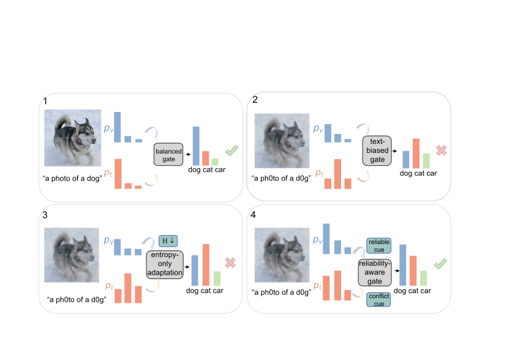

Frozen modality evidence
Visual and textual encoders remain fixed. Test-time updates are confined to the lightweight fusion module.
ACM Multimedia 2026 · MM '26
1 Guangdong University of Technology · 2 Sun Yat-Sen University
MG-MTTA addresses the confidence-reliability mismatch in multimodal test-time adaptation by regulating modality fusion before confidence sharpening.

Vision-language models can face asymmetric visual and textual shifts at deployment. These shifts expose a multimodal failure mode in which an unreliable branch remains overconfident, dominates fusion, and causes entropy-based test-time adaptation to sharpen an incorrect prediction. We model this behavior as doubly stochastic posterior mixing and cast adaptation as constrained de-mixing. MG-MTTA freezes both encoders and updates only a lightweight fusion module. Running-anchor consistency estimates relative branch drift, while cross-modal conflict regulates modality dominance before entropy sharpening.
Across visual, textual, and joint shifts, MG-MTTA improves ImageNet top-1 accuracy from 57.97% to 66.51% under textual shift and from 21.68% to 26.27% under joint shift, while reducing wrong-more-confident failures.
Approach
MG-MTTA separates modality selection from confidence improvement: the gate controls dominance, entropy sharpens the fused posterior, and diversity regularizes the batch marginal.
Visual and textual encoders remain fixed. Test-time updates are confined to the lightweight fusion module.
Running-anchor consistency tracks branch drift, while JS divergence and ranking disagreement measure cross-modal conflict.
A soft reliability prior constrains modality dominance before entropy minimization sharpens the final prediction.
hf = αhv + (1 - α)ht
ℒ = ℒent + λgℒgate + λdℒdiv
Results
Top-1 accuracy on the main textual and joint benchmarks, together with reductions in wrong-more-confident failures.
Textual shift
Joint shift
MG-MTTA controls late fusion rather than reconstructing semantic evidence lost inside an encoder. It is a lightweight complement to representation-level adaptation, not a universal replacement for it.
@inproceedings{chen2026mgmtta,
title = {Majorization-Guided Test-Time Adaptation for Vision-Language Models under Modality-Specific Shift},
author = {Chen, Lixian and Huang, Mingxuan and Chen, Yanhui and Lin, Junyi and Shi, Yang},
booktitle = {Proceedings of the 34th ACM International Conference on Multimedia},
year = {2026},
doi = {10.1145/3767308.3836429}
}